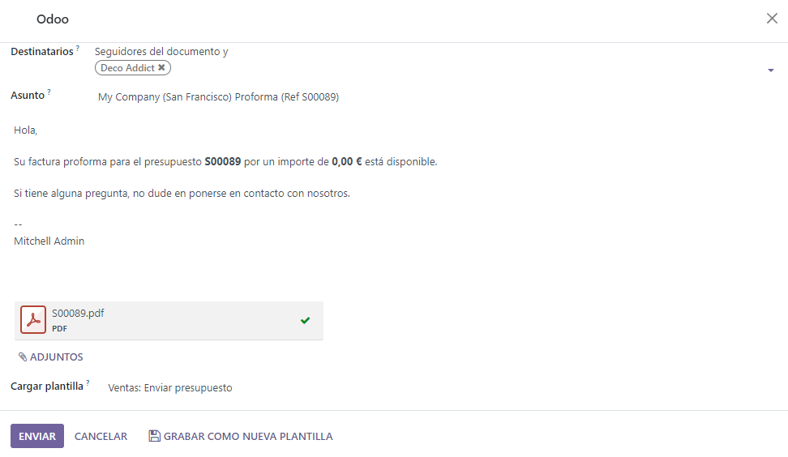

Pro-forma invoices¶
A pro-forma invoice is an abridged or estimated invoice sent in advance of a delivery of goods. It notes the kind and quantity of goods, their value, and other important information, such as weight and transportation charges.
Pro-forma invoices are commonly used as preliminary invoices with a quotation. They are also used during importation for customs purposes. They differ from a normal invoice, in that they are not a demand (or request) for payment.
Configuration¶
In order to utilize pro-forma invoices, the Pro-Forma Invoice feature must be activated.
To enable this feature, navigate to , and in the Quotations & Orders section, click the checkbox next to Pro-Forma Invoice. Then, click Save to save all changes.

Send pro-forma invoice¶
With the Pro-Forma Invoice feature activated, the option to send a pro-forma invoice is now available on any quotation or sales order, via the Send Pro-Forma Invoice button.
Note
Pro-forma invoices can not be sent for a sales order or quotation if an invoice for a down payment has already been sent, or for a recurring subscription.
In either case, the Send Pro-Froma Invoice button does not appear.
However, pro-forma invoices can be sent for services, event registrations, courses, and/or new subscriptions. Pro-forma invoices are not limited to physical, consumable, or storable goods.
When the Send Pro-Forma Invoice button is clicked, a pop-up window appears, from which an email can be sent.
In the pop-up window, the Recipients field is auto-populated with the customer from the sales order or quotation. The Subject field and the body of the email can be modified, if necessary.
The pro-forma invoice is automatically added as an attachment to the email.
When ready, click Send, and Odoo instantly sends the email, with the attached pro-forma invoice, to the customer.
Tip
To preview what the pro-forma invoice looks like, click on the PDF at the bottom of the email pop-up window before clicking Send. When clicked, the pro-forma invoice is downloaded instantly. Open that PDF to view (and review) the pro-forma invoice.